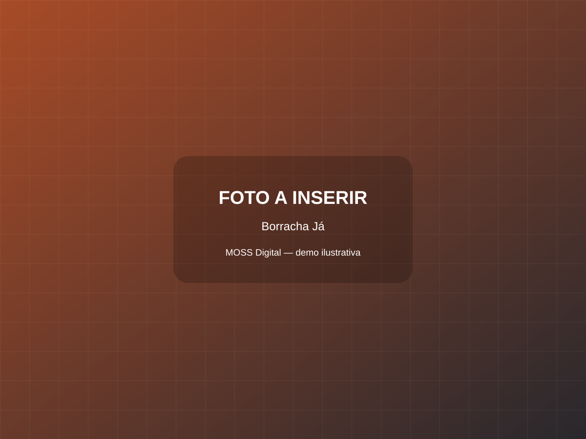

01
Reparo de pneus
Envie o tipo de veículo e uma descrição do problema.
Site para borracharia que organiza o pedido por tipo de veículo, serviço e região, sem prometer atendimento imediato antes da confirmação.

PEDIDO EM 3 ETAPASO profissional confirmará horário, disponibilidade e valor pelo WhatsApp.
Envie o tipo de veículo e uma descrição do problema.
Atendimento mediante confirmação do profissional.
Verificação e manutenção a combinar por mensagem.